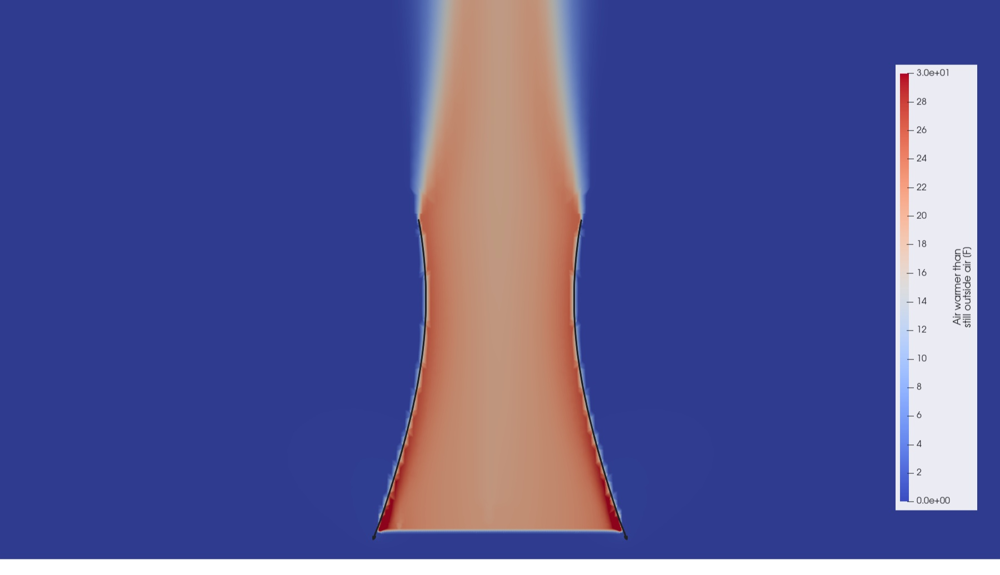
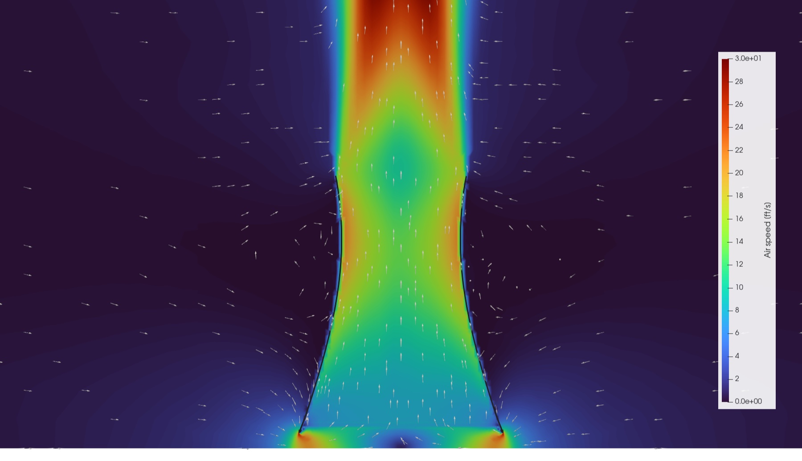
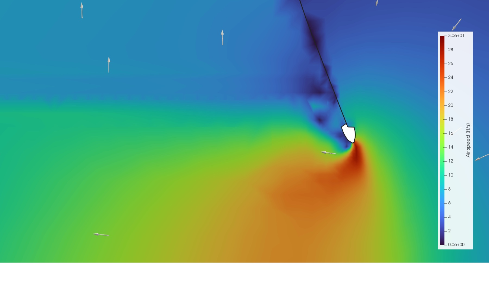
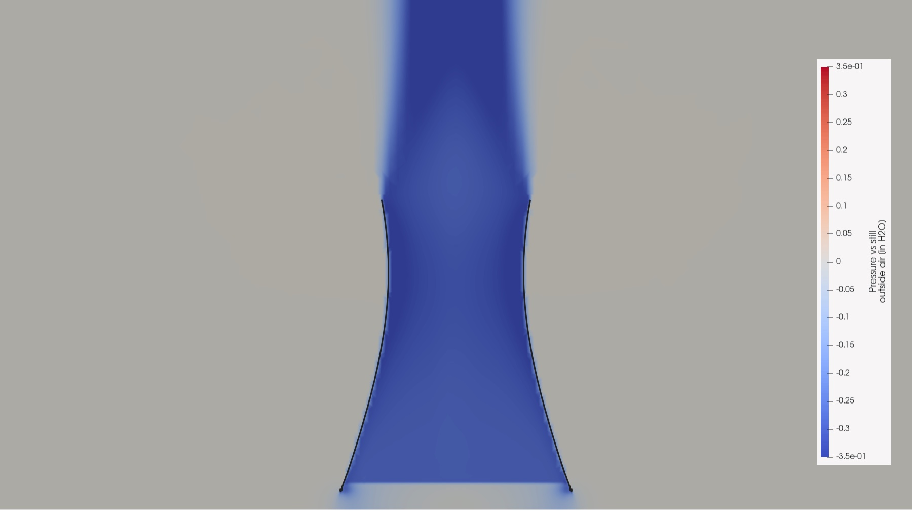
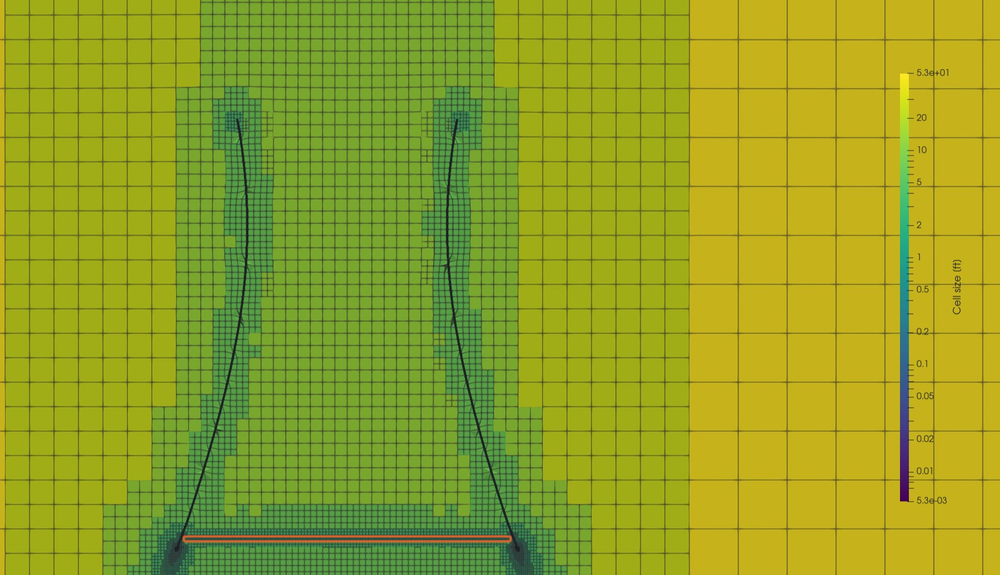
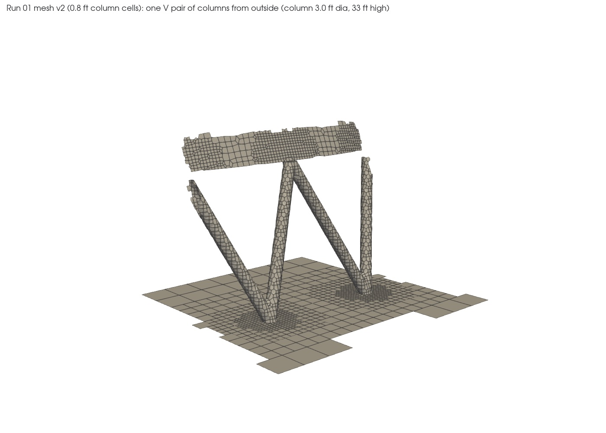

Cooling Tower Plume Dispersion
A 492 ft natural-draft cooling tower modelled in OpenFOAM, with no fans and no wind: heat released in the fill warms the air, and buoyancy alone pulls it in through the inlet ring and up the hyperbolic shell. Phase 1 gets that natural draft right; phase 2 will follow the warm plume as it leaves the tower in a crosswind. First result: the tower draws 97 % of its design air flow and the energy balance closes.
In progress · phase 1 doneThe tower
The geometry as meshed: a 492 ft hyperbolic shell on 80 diagonal columns (40 V pairs) that leave a 33 ft high air inlet around the base. Drag to rotate, scroll to zoom.
Explore the results in 3D
Final iteration of run 01. Switch between temperature rise, air speed, upward speed and draft, turn the cut planes and streamlines on and off, and drag to rotate. Everything is in English units.
Open the viewer full screen → Cuts and streamlines were exported from ParaView (pvbatch script) and are drawn with three.js in your browser.
The flow




Energy balance
Mass-weighted averages over disks across the tower. A check that the solution conserves the heat that was put in, not just that the residuals dropped.
| Disk across the tower | Height, ft | Air flow, lb/min | Rise vs outside, °F | Heat carried, MMBtu/hr | % of input |
|---|---|---|---|---|---|
| Below the fill | 37 | (see note) | 0.2 | 9 | 1.0 |
| Just above the fill | 48 | 2,841,000 | 23.3 | 952 | 100.0 |
| Throat | 378 | 2,831,000 | 22.8 | 931 | 97.8 |
| Tower exit | 490 | 2,814,000 | 22.6 | 917 | 96.3 |
All 952 MMBtu/hr of heat is in the air leaving the fill. The small drop with height is real physics, not a leak: rising air cools at the dry adiabatic rate (5.4 °F per 1000 ft) while the standard atmosphere outside cools at only 3.6 °F per 1000 ft, so some of the heat becomes height. That predicts a 22.7 °F rise at the exit; the CFD gives 22.6 °F. Below the fill the slice interpolation reads the air flow about 15 % high; the exact face-zone monitor at that height agrees with the other two to 0.003 %.
Mesh


Setup
| Tower | Hyperbolic shell 492 ft tall; 361 ft inside diameter at the base, 213 ft throat at 377 ft, 234 ft at the top. 80 diagonal columns (40 V pairs) form a 33 ft high air inlet. Representative dimensions, not a specific plant. |
| Heat load | 952 MMBtu/hr (279 MW) of dry heat in the fill zone: the buoyancy-equivalent of a 1000 MW wet tower (same virtual-temperature rise, no water vapour yet) |
| Fill | Not modelled as geometry. A 4.9 ft deep cell zone at 39–44 ft carries the heat source and a porous resistance (Darcy–Forchheimer, K = 20 velocity heads), like a Fluent porous cell zone with an energy source term |
| Outside air | Calm, 59 °F and 14.70 psia at the ground, standard lapse rate 3.6 °F per 1000 ft |
| Domain | 2,520 × 2,520 × 1,470 ft; ground = adiabatic wall; sides and top open to the standing atmosphere (hydrostatic total-pressure boundaries) |
| Mesh | snappyHexMesh, 1,163,641 cells; shell as a zero-thickness baffle |
| Solver | buoyantSimpleFoam (steady, compressible perfect gas, gravity), k-ω SST |
| Run | 3000 iterations on 4 cores of an M4 MacBook Air, about 55 minutes. Monitors flat for the last ~1000 iterations |
Results vs design
| Quantity | Design | CFD | Result |
|---|---|---|---|
| Tower air flow | 2,916,000 lb/min | 2,827,500 lb/min | −3 % |
| Fill air speed | 6.6 ft/s | 6.12 ft/s | −7 % |
| Exit temperature rise | 22.7 °F | 22.6 °F | Matches |
| Draft | about 0.28 in H₂O | 0.29–0.31 in H₂O | Close |
The design numbers are my own hand calculation, not plant data: 2 m/s (6.6 ft/s) through the fill, a draft of about 28 fill velocity heads and an exit loss of about 5. The tower pulls slightly more draft and slightly less air than designed, which says the fill resistance (K = 20) is a little high. K ≈ 17 should land on 6.6 ft/s.
What I learned
- For a buoyant case, open boundaries must hold the standing atmosphere: the hydrostatic pressure and temperature profile go on the boundaries and into the starting field, or the domain itself drives a false flow.
- A wall too thin to mesh (the 16 in shell) works well as a zero-thickness baffle. The skewed cells all sit on its free edges and did not hurt convergence.
- Steady buoyant runs leave the pressure residual high (5 × 10⁻³ here). The flat mass-flow monitors at three heights and the closed energy balance are the real convergence check.
- Expect very hot fill air at start-up until the draft develops; it settles on its own once the air starts moving.
Roadmap
1a · Dry draft
Heat only, calm air. Natural draft works, 97 % of design flow, energy balance closes.
1b · Moist air
Tune the fill resistance to K ≈ 17, then add water vapour as a species so the plume carries real humidity.
2 · Plume in a crosswind
Atmospheric wind profile across the tower, a taller domain, and how far the plume bends over and spreads downwind.